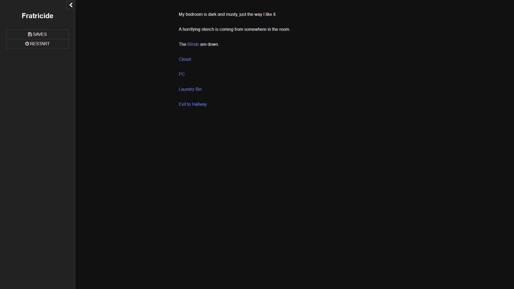
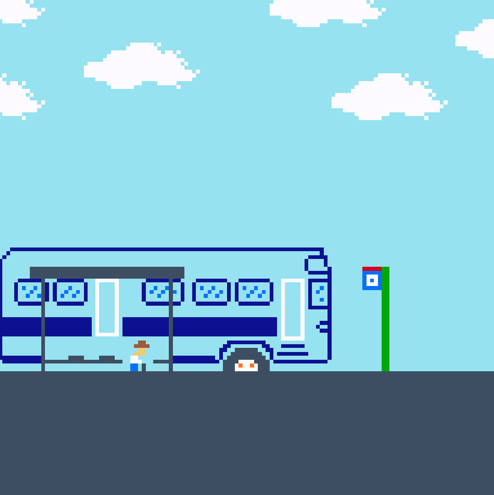
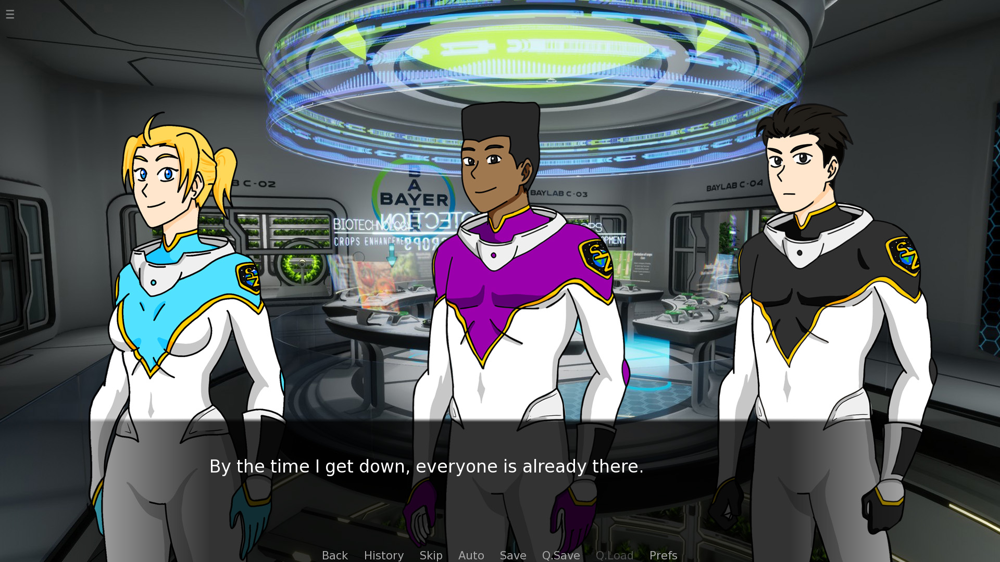
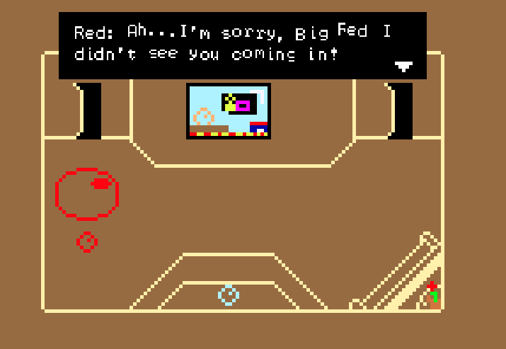

Portfolio
Here are some of my games. They are projects that I completed for classes.
Fratricide
This is a text based game where you play as 13 year old Tai. Tai is a shut in and has been for three years. He fears the monsters who have kept him in his prison but one day is encouraged by a mysterious voice to fight against his oppressors. Will he be able to escape his prison or is there something more that Tai is yet to discover about his situation?
Play Game

I Love Buses
This is a short adventure of an old man who uses the bus.
Play Game

Imperium
Elong Ma, the CEO of SpaceZ, has ordered your team on a rescue mission after a distress signal from another team that landed on planet Canwegema. Your name is Jason and as the leader of the team, you must work with them to figure out what happened to the team that sent the distress signal.
Play Game

Tommorow Will Bring Change
In a world where everyone is a ball, one ball is uncontent with how his life is rolling. Nothing seems to ever go his way, but can he roll around his situation and bounce up to the top, or will he inflate under the pressure?
Play Game
